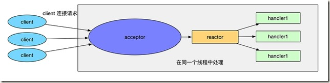
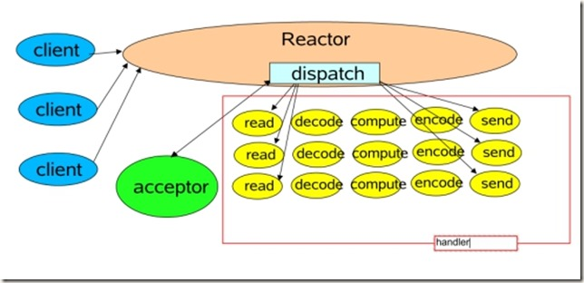
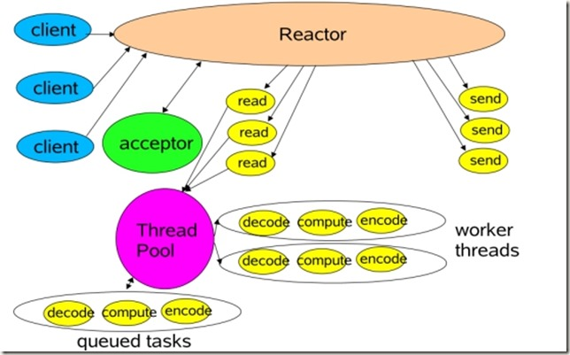
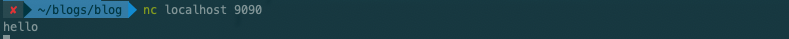
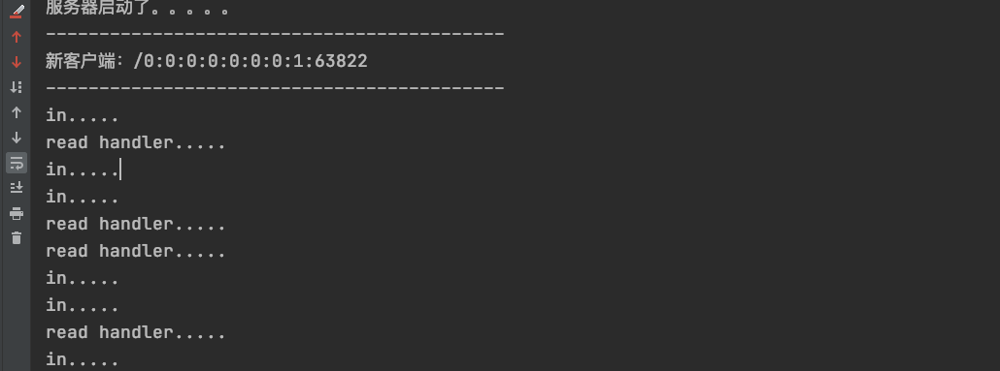
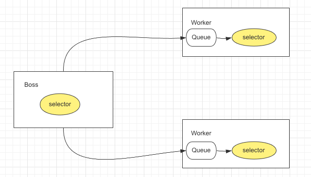
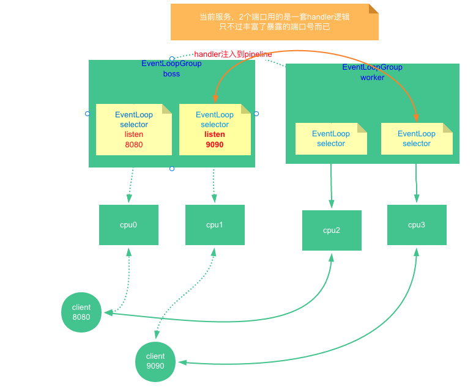
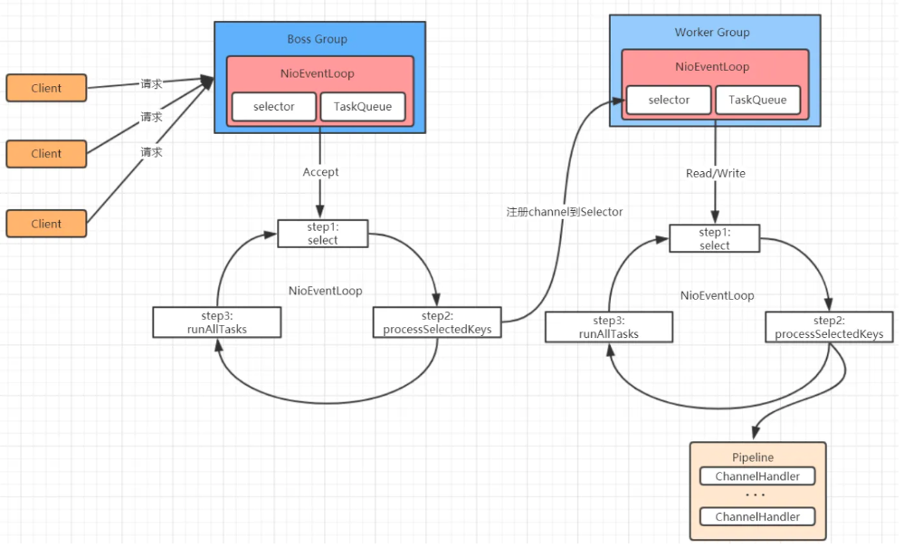

单线程Reactor Reactor模型的朴素原型 之前的文章探讨过IO模型，其中最优化的是基于多路复用器的NIO。Java的NIO模式的Selector网络通讯，其实就是一个简单的Reactor模型。可以说是Reactor模型的朴素原型。
我们再来回顾一下代码
1 2 3 4 5 6 7 8 9 10 11 12 13 14 15 16 17 18 19 20 21 22 23 24 25 26 27 28 29 30 31 32 33 34 35 36 37 38 39 40 41 42 43 44 45 46 47 48 49 50 51 52 53 54 55 56 57 58 59 60 61 62 63 64 65 66 67 68 69 70 71 72 73 74 75 76 77 78 79 80 81 82 83 84 85 86 87 88 89 90 91 92 93 94 95 96 97 98 99 100 101 102 import java.io.IOException;import java.net.InetSocketAddress;import java.nio.ByteBuffer;import java.nio.channels.*;import java.util.HashMap;import java.util.Iterator;import java.util.Set;public class SocketMultiplexingSingleThreadv1 private ServerSocketChannel server = null ; private Selector selector = null ; int port = 9090 ; public void initServer () try { server = ServerSocketChannel.open(); server.configureBlocking(false ); server.bind(new InetSocketAddress(port)); server.register(selector, SelectionKey.OP_ACCEPT); } catch (IOException e) { e.printStackTrace(); } } public void start () initServer(); System.out.println("服务器启动了。。。。。" ); try { while (true ) { Set<SelectionKey> keys = selector.keys(); System.out.println(keys.size()+" size" ); while (selector.select() > 0 ) { Set<SelectionKey> selectionKeys = selector.selectedKeys(); Iterator<SelectionKey> iter = selectionKeys.iterator(); while (iter.hasNext()) { SelectionKey key = iter.next(); iter.remove(); if (key.isAcceptable()) { acceptHandler(key); } else if (key.isReadable()) { readHandler(key); } } } } } catch (IOException e) { e.printStackTrace(); } } public void acceptHandler (SelectionKey key) try { ServerSocketChannel ssc = (ServerSocketChannel) key.channel(); SocketChannel client = ssc.accept(); client.configureBlocking(false ); ByteBuffer buffer = ByteBuffer.allocate(8192 ); client.register(selector, SelectionKey.OP_READ, buffer); System.out.println("-------------------------------------------" ); System.out.println("新客户端：" + client.getRemoteAddress()); final String[] split = client.getRemoteAddress().toString().split(":" ); if (split[1 ].equals("15098" )) System.out.println(System.currentTimeMillis()/1000 ); System.out.println("-------------------------------------------" ); } catch (IOException e) { e.printStackTrace(); } } public void readHandler (SelectionKey key) SocketChannel client = (SocketChannel) key.channel(); ByteBuffer buffer = (ByteBuffer) key.attachment(); buffer.clear(); int read = 0 ; try { while (true ) { read = client.read(buffer); if (read > 0 ) { buffer.flip(); while (buffer.hasRemaining()) { client.write(buffer); } buffer.clear(); } else if (read == 0 ) { break ; } else { client.close(); break ; } } } catch (IOException e) { e.printStackTrace(); } } public static void main (String[] args) SocketMultiplexingSingleThreadv1 service = new SocketMultiplexingSingleThreadv1(); System.out.println(System.currentTimeMillis()/1000 ); service.start(); } }
单线程Reactor 实际上的Reactor模式，是基于Java NIO的，在他的基础上，抽象出来两个组件——Reactor和Handler两个组件：
（1）Reactor：负责响应IO事件，当检测到一个新的事件，将其发送给相应的Handler去处理；新的事件包含连接建立就绪、读就绪、写就绪等。
（2）Handler:将自身（handler）与事件绑定，负责事件的处理，完成channel的读入，完成处理业务逻辑后，负责将结果写出channel。
如下图所示:

这是最简单的单Reactor单线程模型。Reactor线程是个多面手，负责多路分离套接字，Accept新连接，并分派请求到Handler处理器中。
下面的图，来自于“Scalable IO in Java”，和上面的图的意思，差不多。Reactor和Hander 处于一条线程执行。

顺便说一下，可以将上图的accepter，看做是一种特殊的handler。
多线程Reactor 上述的单线程Reactor虽然能使用单线程应对多个并发，但是还没有发挥出多线程的优势，现代的cpu都是多核cpu，如果只是单线程 明显发挥不出多核cpu的实力。我们尝试改造Reactor模式为多线程。
下面的图，来自于“Scalable IO in Java”,Reactor是一条独立的线程，Hander 处于线程池中执行。

改造代码如下:
1 2 3 4 5 6 7 8 9 10 11 12 13 14 15 16 17 18 19 20 21 22 23 24 25 26 27 28 29 30 31 32 33 34 35 36 37 38 39 40 41 42 43 44 45 46 47 48 49 50 51 52 53 54 55 56 57 58 59 60 61 62 63 64 65 66 67 68 69 70 71 72 73 74 75 76 77 78 79 80 81 82 83 84 85 86 87 88 89 90 91 92 93 94 95 96 97 98 99 100 101 102 103 104 105 106 107 108 109 110 111 112 113 114 115 116 117 118 119 120 121 122 123 124 125 import java.io.IOException;import java.net.InetSocketAddress;import java.nio.ByteBuffer;import java.nio.channels.*;import java.util.Iterator;import java.util.Set;public class SocketMultiplexingSingleThreadv2 private ServerSocketChannel server = null ; private Selector selector = null ; int port = 9090 ; public void initServer () try { server = ServerSocketChannel.open(); server.configureBlocking(false ); server.bind(new InetSocketAddress(port)); selector = Selector.open(); server.register(selector, SelectionKey.OP_ACCEPT); } catch (IOException e) { e.printStackTrace(); } } public void start () initServer(); System.out.println("服务器启动了。。。。。" ); try { while (true ) { while (selector.select(50 ) > 0 ) { Set<SelectionKey> selectionKeys = selector.selectedKeys(); Iterator<SelectionKey> iter = selectionKeys.iterator(); while (iter.hasNext()) { SelectionKey key = iter.next(); iter.remove(); if (key.isAcceptable()) { acceptHandler(key); } else if (key.isReadable()) { System.out.println("in....." ); readHandler(key); } else if (key.isWritable()){ key.interestOps(key.interestOps() & ~SelectionKey.OP_WRITE); writeHandler(key); } } } } } catch (IOException e) { e.printStackTrace(); } } private void writeHandler (SelectionKey key) new Thread(()->{ System.out.println("write handler..." ); SocketChannel client = (SocketChannel) key.channel(); ByteBuffer buffer = (ByteBuffer) key.attachment(); buffer.flip(); while (buffer.hasRemaining()) { try { client.write(buffer); } catch (IOException e) { e.printStackTrace(); } } try { Thread.sleep(2000 ); } catch (InterruptedException e) { e.printStackTrace(); } buffer.clear(); }).start(); } public void acceptHandler (SelectionKey key) try { ServerSocketChannel ssc = (ServerSocketChannel) key.channel(); SocketChannel client = ssc.accept(); client.configureBlocking(false ); ByteBuffer buffer = ByteBuffer.allocate(8192 ); client.register(selector, SelectionKey.OP_READ, buffer); System.out.println("-------------------------------------------" ); System.out.println("新客户端：" + client.getRemoteAddress()); System.out.println("-------------------------------------------" ); } catch (IOException e) { e.printStackTrace(); } } public void readHandler (SelectionKey key) new Thread(()->{ System.out.println("read handler....." ); SocketChannel client = (SocketChannel) key.channel(); ByteBuffer buffer = (ByteBuffer) key.attachment(); buffer.clear(); int read = 0 ; try { while (true ) { read = client.read(buffer); System.out.println(Thread.currentThread().getName()+ " " + read); if (read > 0 ) { key.interestOps( SelectionKey.OP_READ); client.register(key.selector(),SelectionKey.OP_WRITE,buffer); } else if (read == 0 ) { break ; } else { client.close(); break ; } } } catch (IOException e) { e.printStackTrace(); } }).start(); } public static void main (String[] args) SocketMultiplexingSingleThreadv2 service = new SocketMultiplexingSingleThreadv2(); service.start(); } }
这个乍一看好像没啥问题，实际运行的话是有点问题的，我们运行之后，在客户端处输入一个hello
 
看到什么问题？我明明在客户端只输入了一次hello，但是确重复调用了，具体原因在代码中注释了,就是因为在切换线程处理的时候，这个空隙中 由于缓冲区没有读完，相当于read事件没有被处理完成，所以会一直调用。也就是说，每次输入，只要切换线程，这个背后可能就会调用多次epoll_wait得到read 事件。也就是会造成重复的系统调用 。
这样这么多浪费的系统调用被调肯定不行，并发多的时候 一定会影响性能，但我们还想利用多线程怎么办呢？
实际这个问题就是在于主线程非阻塞造成的，这一个reactor线程 判断获取了read事件、write事件 却切换了线程处理,如果我们让一个线程对此selector注册的事件负责到底，判断是read事件则进行read处理，判断是write事件就进行write处理，大不了多来几个reactor不就可以了吗？思路转，天地宽。
优化代码:
1 2 3 4 5 6 7 8 9 10 11 12 13 14 15 16 17 18 19 20 21 22 23 24 25 26 27 28 29 30 31 32 33 34 35 36 37 38 39 40 41 42 43 44 45 46 47 48 49 50 51 52 53 54 55 56 57 58 59 60 61 62 63 64 65 66 67 68 69 70 71 72 73 74 75 76 77 78 79 80 81 82 83 84 85 86 87 88 89 90 91 92 93 94 95 96 97 98 99 100 101 102 103 104 105 106 107 108 109 110 111 112 113 114 115 116 117 118 119 120 121 122 123 124 125 126 127 128 129 130 131 132 133 134 135 136 137 138 139 140 141 142 143 144 145 146 147 148 149 150 151 152 153 154 155 156 157 158 159 import java.io.IOException;import java.net.InetSocketAddress;import java.nio.ByteBuffer;import java.nio.channels.SelectionKey;import java.nio.channels.Selector;import java.nio.channels.ServerSocketChannel;import java.nio.channels.SocketChannel;import java.util.Iterator;import java.util.Set;import java.util.concurrent.BlockingQueue;import java.util.concurrent.LinkedBlockingQueue;import java.util.concurrent.atomic.AtomicInteger;public class SocketMultiplexingThreads private ServerSocketChannel server = null ; private Selector selector1 = null ; private Selector selector2 = null ; private Selector selector3 = null ; int port = 9090 ; public void initServer () try { server = ServerSocketChannel.open(); server.configureBlocking(false ); server.bind(new InetSocketAddress(port)); selector1 = Selector.open(); selector2 = Selector.open(); selector3 = Selector.open(); server.register(selector1, SelectionKey.OP_ACCEPT); } catch (IOException e) { e.printStackTrace(); } } public static void main (String[] args) SocketMultiplexingThreads service = new SocketMultiplexingThreads(); service.initServer(); NioThread T1 = new NioThread(service.selector1 ,2 ); NioThread T2 = new NioThread(service.selector2); NioThread T3 = new NioThread(service.selector3); T1.start(); try { Thread.sleep(1000 ); } catch (InterruptedException e) { e.printStackTrace(); } T2.start(); T3.start(); System.out.println("服务器启动了。。。。。" ); try { System.in.read(); } catch (IOException e) { e.printStackTrace(); } } } class NioThread extends Thread Selector selector = null ; static int selectors = 0 ; int id = 0 ; volatile static BlockingQueue<SocketChannel>[] queue; static AtomicInteger idx = new AtomicInteger(); NioThread(Selector sel,int n ) { this .selector = sel; this .selectors = n; queue =new LinkedBlockingQueue[selectors]; for (int i = 0 ; i < n; i++) { queue[i] = new LinkedBlockingQueue<>(); } System.out.println("Boss 启动" ); } NioThread(Selector sel ) { this .selector = sel; id = idx.getAndIncrement() % selectors ; System.out.println("worker: " +id +" 启动" ); } @Override public void run () try { while (true ) { while (selector.select(10 ) > 0 ) { Set<SelectionKey> selectionKeys = selector.selectedKeys(); Iterator<SelectionKey> iter = selectionKeys.iterator(); while (iter.hasNext()) { SelectionKey key = iter.next(); iter.remove(); if (key.isAcceptable()) { acceptHandler(key); } else if (key.isReadable()) { readHandler(key); } } } if ( ! queue[id].isEmpty()) { ByteBuffer buffer = ByteBuffer.allocate(8192 ); SocketChannel client = queue[id].take(); client.register(selector, SelectionKey.OP_READ, buffer); System.out.println("-------------------------------------------" ); System.out.println("新客户端：" + client.socket().getPort()+"分配到：" + (id)); System.out.println("-------------------------------------------" ); } } } catch (IOException e) { e.printStackTrace(); } catch (InterruptedException e) { e.printStackTrace(); } } public void acceptHandler (SelectionKey key) try { ServerSocketChannel ssc = (ServerSocketChannel) key.channel(); SocketChannel client = ssc.accept(); client.configureBlocking(false ); int num = idx.getAndIncrement() % selectors; queue[num].add(client); } catch (IOException e) { e.printStackTrace(); } } public void readHandler (SelectionKey key) SocketChannel client = (SocketChannel) key.channel(); ByteBuffer buffer = (ByteBuffer) key.attachment(); buffer.clear(); int read = 0 ; try { while (true ) { read = client.read(buffer); if (read > 0 ) { buffer.flip(); while (buffer.hasRemaining()) { client.write(buffer); } buffer.clear(); } else if (read == 0 ) { break ; } else { client.close(); break ; } } } catch (IOException e) { e.printStackTrace(); } } }
整体架构大致如下:

我们用一个线程持有一个selector,在selector上只注册了accept事件,我们将其称为Boss,而我们再启动另外两个线程，每个线程持有一个selector，我们称其为worker线程，worker线程启动之后就负责对注册到本线程selector上的事件进行处理。
Boss线程接收客户端连接之后，我们直接将它注册到worker线程上selector，但是注意，直接注册由于worker调用select方法可能会阻塞，是注册不上的，此时需要唤醒操作。更好的处理方式就是代码中的通过队列解偶，让worker自己去注册即可，这就完成了一种多线程下的reactor模型。
Netty IO Boss、Worker 多线程的reactor模式，其实重点就一个，就是让单线程持有一个selector，并且由它自己为注册到selector上的事件负责！那么，也就是说，我们将上图的Boss 变为多个线程，Worker变为更多的线程，并且Boss 线程或许也可以注册读写事件 由此来分担压力，或者 某些Worker专门注册写事件，某些Worker专门注册读事件，只要能充分利用多核cpu，可以任意组合。
架构图:

简单的Netty实现 1 2 3 4 5 6 7 8 9 10 11 12 13 14 15 16 17 18 19 20 21 22 23 24 25 26 27 28 29 30 31 32 33 34 35 36 37 38 39 40 41 42 43 44 45 46 47 48 49 50 51 52 53 54 55 56 57 58 59 60 61 62 63 64 65 66 67 68 69 70 71 72 73 74 75 76 77 78 79 80 81 82 83 84 85 86 87 88 89 90 91 92 93 94 95 96 97 98 99 100 101 102 103 104 105 106 107 108 109 110 111 112 113 114 115 116 117 118 119 120 121 122 123 124 125 126 127 128 129 130 131 132 133 134 135 136 137 138 139 140 141 142 143 144 145 146 147 148 149 150 151 152 153 154 155 156 157 158 159 160 161 162 163 164 165 166 167 168 169 170 171 172 173 174 175 176 177 178 179 180 181 182 183 184 185 186 187 188 189 190 191 192 193 194 195 196 197 198 199 200 201 202 203 204 205 206 207 208 209 210 211 212 213 214 215 216 217 218 219 220 221 222 223 224 225 226 227 228 229 230 231 232 233 234 import java.io.IOException;import java.net.InetSocketAddress;import java.net.StandardSocketOptions;import java.nio.ByteBuffer;import java.nio.channels.*;import java.util.Iterator;import java.util.Set;import java.util.concurrent.BlockingQueue;import java.util.concurrent.Executor;import java.util.concurrent.LinkedBlockingQueue;import java.util.concurrent.TimeUnit;import java.util.concurrent.atomic.AtomicInteger;public class SocketMultiplexingThreadsV2 public static void main (String[] args) throws IOException EventLoopGroup boss = new EventLoopGroup(1 ); EventLoopGroup worker = new EventLoopGroup(3 ); ServerBootStrap b = new ServerBootStrap(); b.group(boss, worker).bind(9090 ); System.in.read(); } } class ServerBootStrap private EventLoopGroup group; private EventLoopGroup chiledGroup; ServerAcceptr sAcceptr; public ServerBootStrap group (EventLoopGroup boss, EventLoopGroup worker) group = boss; chiledGroup = worker; return this ; } public void bind (int port) throws IOException ServerSocketChannel server = ServerSocketChannel.open(); server.configureBlocking(false ); server.bind(new InetSocketAddress(port)); sAcceptr = new ServerAcceptr(chiledGroup, server); EventLoop eventloop = group.chosser(); eventloop.execute(new Runnable() { @Override public void run () eventloop.execute(new Runnable() { @Override public void run () try { eventloop.name = Thread.currentThread() + eventloop.name; System.out.println("bind...server...to " + eventloop.name); server.register(eventloop.selector, SelectionKey.OP_ACCEPT, sAcceptr); } catch (ClosedChannelException e) { e.printStackTrace(); } } }); } }); } } class EventLoopGroup AtomicInteger cid = new AtomicInteger(0 ); EventLoop[] childrens = null ; EventLoopGroup(int nThreads) { childrens = new EventLoop[nThreads]; for (int i = 0 ; i < nThreads; i++) { childrens[i] = new EventLoop("T" + i); } } public EventLoop chosser () return childrens[cid.getAndIncrement() % childrens.length]; } } interface Handler void doRead () } class ClientReader implements Handler SocketChannel key; ClientReader(SocketChannel server) { this .key = server; } @Override public void doRead () ByteBuffer data = ByteBuffer.allocateDirect(4096 ); try { key.read(data); data.flip(); byte [] dd = new byte [data.limit()]; data.get(dd); System.out.println(new String(dd)); data.clear(); for (int i = 0 ; i < 10 ; i++) { data.put("a" .getBytes()); data.flip(); key.write(data); data.clear(); } } catch (IOException e) { e.printStackTrace(); } } } class ServerAcceptr implements Handler ServerSocketChannel key; EventLoopGroup cGroup; ServerAcceptr(EventLoopGroup cGroup, ServerSocketChannel server) { this .key = server; this .cGroup = cGroup; } public void doRead () try { final EventLoop eventLoop = cGroup.chosser(); final SocketChannel client = key.accept(); client.configureBlocking(false ); client.setOption(StandardSocketOptions.TCP_NODELAY, true ); final ClientReader cHandler = new ClientReader(client); eventLoop.execute(new Runnable() { @Override public void run () try { System.out.println("socket...send...to " + eventLoop.name+ " client port : " + client.socket().getPort()); client.register(eventLoop.selector, SelectionKey.OP_READ, cHandler); } catch (IOException e) { e.printStackTrace(); } } }); } catch (IOException e) { e.printStackTrace(); } } } class EventLoop implements Executor Selector selector; Thread thread = null ; BlockingQueue events = new LinkedBlockingQueue(); int NOT_STARTED = 1 ; int STARTED = 2 ; AtomicInteger STAT = new AtomicInteger(1 ); String name; public EventLoop (String name) try { this .name = name; selector = Selector.open(); } catch (IOException e) { e.printStackTrace(); } } public void run () throws InterruptedException, IOException System.out.println("server已经开始：" ); for (; ; ) { int nums = selector.select(); if (nums > 0 ) { Set<SelectionKey> keys = selector.selectedKeys(); Iterator<SelectionKey> iter = keys.iterator(); while (iter.hasNext()) { SelectionKey key = iter.next(); iter.remove(); Handler handler = (Handler) key.attachment(); if (handler instanceof ServerAcceptr) { } else if (handler instanceof ClientReader) { } handler.doRead(); } } runrTask(); } } @Override public void execute (Runnable task) try { events.put(task); this .selector.wakeup(); } catch (InterruptedException e) { e.printStackTrace(); } if (!inEventLoop() && STAT.incrementAndGet() == STARTED) { new Thread(new Runnable() { @Override public void run () try { thread = Thread.currentThread(); EventLoop.this .run(); } catch (InterruptedException e) { e.printStackTrace(); } catch (IOException e) { e.printStackTrace(); } } }).start(); } } public void runrTask () throws InterruptedException for (int i = 0 ; i < 5 ; i++) { Runnable task = (Runnable) events.poll(10 , TimeUnit.MILLISECONDS); if (task != null ) { events.remove(task); task.run(); } } } private boolean inEventLoop () return thread == Thread.currentThread(); } }
架构图 
参考:https://www.cnblogs.com/crazymakercircle/p/9833847.html

This is copyright.